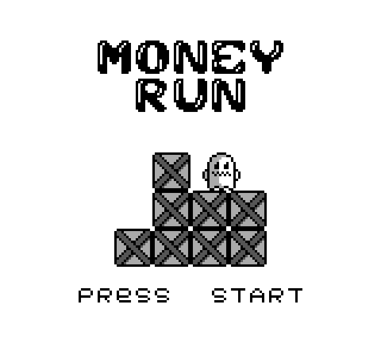

MONEY-RUN is a simple side-scroller, in which the character is asked to go from left to right, navigating over a series procedurally generated columns.
The name refers to the gameplay mechanic in which the player will be trying to collect money while avoiding getting stuck amongst the columns. This has not been implemented yet. See my
HTML5 implementation of this game to see what the completed game is supposed to look like.
Screenshot
Below is an animated GIF of the operation of the money-run program, demonstrating typical gameplay. The features demonstrated are:
- Main menu
- Movement and jumping
- Collision detection
- Pseudo-random generation of world, with scrolling
- Game over screen

Click the image to view a larger version.
Controls
- START
- start the game
- D-PAD
- move the player left or right
- A
- jump
Sources
More detailed information regarding this project is available in the Github repository. In particular, the source code used to create this program, as well as technical details regarding the implementation are discussed in the README for the project.

{kind=link}